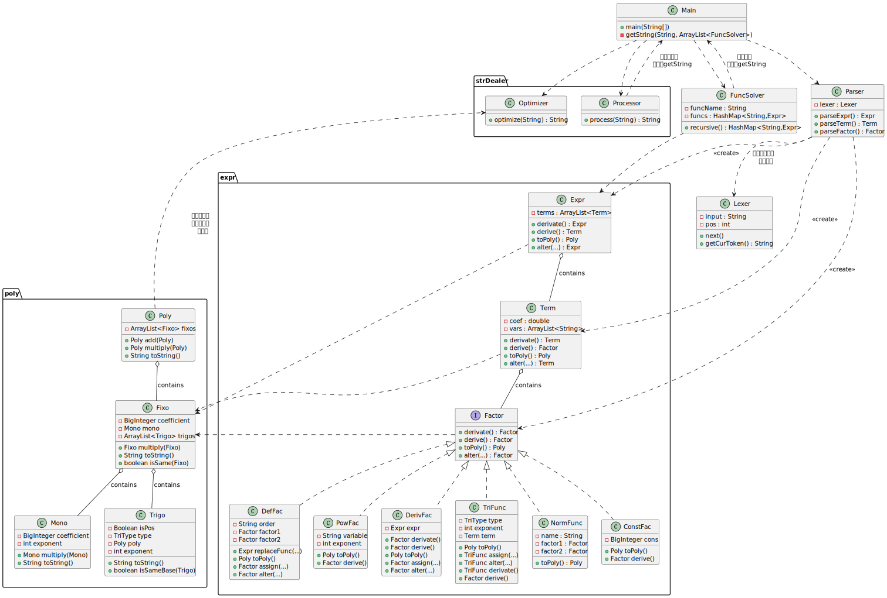
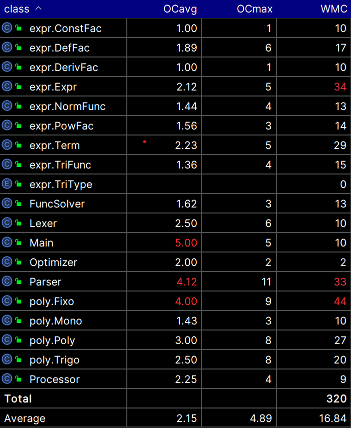
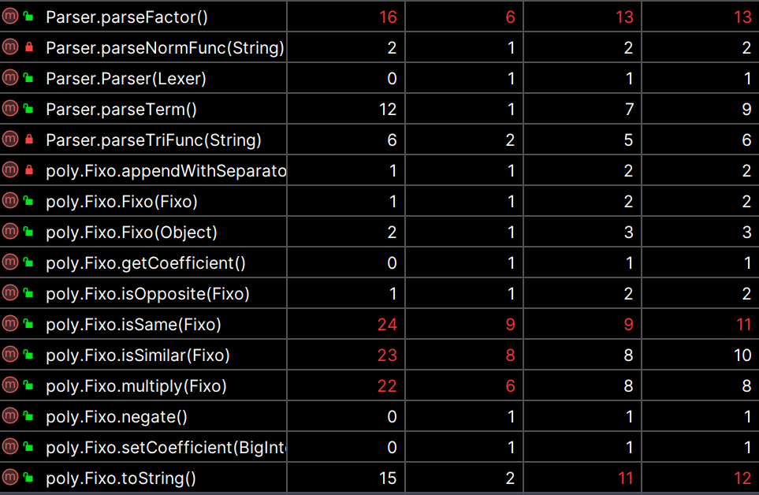

BUAA_OO2025第一单元总结
又是一年花开时，亦当进取亦当歌。
前言
OO第一单元的迭代已然落下帷幕，余下的是对此的总结与反思。本单元的学习主题是【表达式展开与化简】，三次作业迭代让我更熟悉了用类管理对象，也提升了模块化的设计能力。作业内容包括：多项式展开、三角函数、递推函数、普通函数与求导因子。
对于快节奏生活当下的我们，总结与反思往往是不可多得的，众人像脱缰野马奔驰，却少有回望来时路的时候。因此我将借此机会，对我的OO学习生活做一次全面的回顾。:D
程序结构回顾
迭代作业初始时，参考了OO加油站与往年博客的架构，将整体流程解耦分成三个部分，即预处理、表达式解析、表达式展开与输出。在迭代过程中，第二次作业在预处理部分添加函数解析，表达式解析与展开添加三角因子处理，增添了一些相应的输出优化；第三次作业在第二次作业的基础大幅重构函数解析与替换（详见BUG反思），增添了求导因子。迭代过程整体保证了一定的架构，没有出现很大的结构问题。
请看类图：

在输入预处理部分，我们分别对目标字符串与函数群进行处理：
Main：程序的主入口，负责调用
Processor与FuncSolver进行预处理，然后通过静态方法 getString进入表达式展开与输出环节。Processor：负责化简表达式的方法类。在字符串层面化简表达式，化简效果有清除空白符、去除多余负号等。
FuncSolver：本意是负责解析函数的方法类，在第三次作业前重构时，为了复用此类解析普通函数，为其添加三个属性：函数名，函数序号与函数表达式的键值对，函数形参。
在表达式解析部分包括文法解析与词法解析：
Lexer：负责文法解析，借鉴第一次上机的写法，将字符串按照token的方式解析。
Parser：负责语法解析，依赖于文法解析，对不同的token进行不同的解析，运用【递归下降】的思想，构建
Expr类的目标表达式。
在表达式展开与化简部分，主体任务便是将expr 转化为poly:
Expr、Term与Factor：分别代表着语法树的三个层次，
Expr由Term组成，Term又由Factor组成，而其中Factor仅是一个接口，这是出于归一化多类型因子的考虑。DefFac、PowFac、DerivFac、TriFunc、NormFunc与ConstFac：六种实现
Factor接口的因子类型。Poly、Fixo、Mono与Trigo：是多项式的组成类。在多项式输出的时候，已经不存在求导因子、自定义函数，因此多项式
Poly的形式可以由数个混合积Fixo相加组成，而混合积Fixo由一个单项式Mono与数个三角式Trigo相乘得到。形式化表达可用公式表示如下：
Optimizer：接受
Poly的 toString方法得到的字符串为输入，最后完成一次字符串层面的优化。
项目度量分析

上图是有关程序中所有类的度量，其中有3-4个类的整体复杂度偏高，难以维护，本人确实也在后期调整Main时感到有些困难，作为一个程序的主类，下次作业我会格外注意尽量降低主类的复杂度。

上图是方法层面的复杂度部分指标，分别为认知复杂度、本质复杂度、设计复杂度与圈复杂度，主要截出了复杂度较高的方法做本次总结的参考：
其中parseFactor一直是我想要拆分的方法之一，按照因子类型不同细化为parseXxx方法，如此即可保持更高的可读性与逻辑性。
下面的isSame和isSimilar都是极其【炸裂】的存在，自己回头看一遍很难不小，还依稀记得当时写的时候自己绕了半天硬要挑战自己的逻辑。现在一看认知复杂度20+，老实了。在这里放一段我的代码结构，仅供充当反例：
1
2
3
4
5
6
7
8
9
10
11
12
13
14
15
16
17
18
19
20
21public boolean isSame(Fixo other) {
if(...) {return false;}
else if(...) {return false;}
else if(...) {return false;}
else {
if(...){return false;}
else {
for(...){
// ...
for(...){
if(...){
// ...
break;
}
}
}
if (...) {return false;}
}
}
return true;
}在AI大人的指引下，我顺利将这两个相似的方法重构拆分成三个方法，更加清晰地展现了这段代码本身的逻辑。给自己也留下一个深刻的教训，不要只顾写代码，而不思考代码本身的可读性与思考量，写完debug的还是自己，只会徒增烦恼。最后的multiply方法也是同理，同样是
if和for语句”错落有致“，严重影响了可读性的同时，耦合度和复杂度也高居不下，并不符合我们模块化设计的初衷，也希望自己能在后续的学习中谨记这次关于复杂度的反思，不要在debug与重构时给自己上难度。
架构设计体验
在第一次作业中，我感觉难度适中，可能是因为第一次上机的代码框架给人很大的启发与帮助，主要难点位于递归下降的解析中，给人一种【纸上得来终觉浅，绝知此事要躬行】的感受，听了无数遍递归下降的思想，不如亲手编写出一次
Parser收获大。此外，关于表达式的展开，仔细琢磨了hyggge学长原创（大抵如此？）的Mono&Poly实现方法后，感觉吃透了就写得很快。在第二次作业中，在刚拿上迭代要求时感觉不会很难，但是做起来着实很难，本着尽善尽美的想法，我钻进了优化的牛角尖，在周四晚上还在优化三角函数的输出，周五推翻之前的写法重来，周六开始写递推函数，现在回头想想属实不应该，应该先着眼全局，再尽善尽美。
噩耗如约而至，第二次作业强测漏洞百出。最大的bug莫过于没有注意到递推函数形参顺序不固定，形如下面的递推函数，我会直接报错。
1 | f{0}(y,x) = ... |
很难去归咎于时间匆忙还是粗心大意，反正事已至此，当时只想老老实实修bug。后续在反复推敲后，感觉用ArrayList存储形参是目前最好的方案，但还是无法干净利落地修复bug。外加第三次作业的要求问世，面对普通函数的迭代工作，我在周四才开始决定：重构我的FuncSolver类。
我将FuncSolver视作装载每个函数的容器，属性与构造方法如下：
1 | public class FuncSolver { |
这一部分我且称之为函数的解析。此后便是解析表达式，随后对表达式进行函数的替换。
这里的函数替换涉及到一个类似于递归下降的易错点。当我们顺着语法树找到一个又一个函数后，我们需要保证每一个函数都要被替换到位，即替换到最底层每一个因子。我最初的实现是在Term的alter方法中列举可能出现的因子，后来想想这无疑是个很糟糕的设计，不仅破坏了Factor接口归一化的统一管理，而且容易遗漏特殊情况，例如函数内部嵌套函数，三角内部嵌套函数。因此我也顺便重构了这里的逻辑，让alter作为接口统一的方法，在每个具体的Factor类中逐一实现。
在alter方法的内部，我又调用了另一个assign方法。意在二者各司其职，alter作为替换的主方法，它的职责其实是遍历查找，在语法树中一丝不苟地”追杀“需要被替换的函数，而assign方法的职责则是当alter方法锁定目标后，进行赋值替换。这个逻辑也在我后续处理求导因子再一次使用。
在函数替换结束后，应将表达式转化成多项式。在多项式的构建中，好像大部分人选择重构Mono，而我选择保留Mono的代码，让它符合单词本意。代价便是新建两个类Fixo与Trigo，在上文已做介绍，这里不再赘述了。好处便是自己看起来逻辑组成清晰、便于迭代与修改，弊端也许就在于会导致代码量变大、深度变深。
在第三周的周五早晨——或者中午，我完成了第二次作业的bug修复与重构。
- 在当周周五晚上，我才开始第三次作业的迭代。但重构第二次作业的时候已经为迭代做了一定的考虑，普通函数也和递推函数一同被储存在了
FuncSolver当中，几乎不需要做太大的改变，只需要为FuncSolver类添加属性funcName与对应的get方法，即可完成FuncSolver的迭代。在Main中重构出一个静态方法，将预处理与后续操作分离开，需要完成的迭代是逆序将函数依次替换，此处逆序是指与定义顺序相反，否则会在函数嵌套定义的情况下出现替换不彻底的问题。
第三次作业迭代的另一部分便是处理求导因子，如上所述，仍然是采取一个”查找+处理“分离的逻辑，分别是derivative方法与derive方法，这里同样需要做到将求导因子替换干净，以免影响后续展开以及输出。
最后，第三次作业迭代在24小时内被速通了，但我脑海里仍是hw2重构的影子，希望自己以后不要犯这样的错误，在迭代作业中保持谨慎、长远考虑。
迭代情景设想
设想迭代情景如下：
新增其他类型的函数，如分段函数。
可扩展性：只需在
FuncSolver中针对新的函数开发新的方法，或是将FuncSolver设计成类似Factor的接口，统一管理或替换不同的函数。新增其他变量字母，如‘y’。
可扩展性：可以在解析时让token匹配x或y，在PowFac与Mono中增添属性Variable即可完成大致的迭代。
程序bug分析
- 在迭代原因中提及过的bug，因为审题不到位致使数据形参顺序颠倒导致程序中止。
解决方案：重构了FuncSolver
在判断
poly或fixo是否相等或是否为同类项时，我使用了”带值对比法“，即将其中自变量的值代换为随机数，进行100次计算判断是否相等。导致两个bug：- 计算太多次数，导致程序CTLE
解决方案A（缓兵之计）：将计算次数改为10次，解决了超时bug（实则治标不治本）
- 当强测中出现类似于
x^4096的式子，我代入的x往往会超出double范围，被自动变为Infinity
解决方案B（未果）：取对数（难以实现且遇到值为0的表达式会出现负的
Inifinity）解决方案C（最终方案）：遍历查找其中每个元素（单项式，三角式），虽然修复了bug，但是直接导致了上文所述的复杂度超标的问题，相应的策略则是对此方法进行拆分与重构，最终降低了复杂度，也完成了bug修复。
在出现形似
dx(sin(dx(x)))此类，求导因子隔一层三角函数，层层嵌套时，会出现处理不彻底的问题，在第三次强测中喜提一个RUNTIME_ERROR。
解决方法：对于所有内部仍有可能有多层语法树的因子进行更深层次的derivative处理。
例如：
1 | // in TriFunc |
对于我个人的bug而言，基本都是在修bug之后，复杂度会得以不同程度的提升，有的只是小范围的，有的则需要通过将几个方法解耦，哪怕会出现更多的方法，但只要符合模块化设计的理念就不算是坏的重构。
互刀策略分析
在第一次作业中借用了学长的评测机，属于是在舒适圈中躺了一周。
第二次作业往后，没有了评测机，也没有时间动手搭自己的数据生成器，只写了一个sympy脚本进行对拍，那这时就要考虑数据构造的问题了。相比手握核弹般的评测机的同学，构造数据必然是效率低下，那就需要多多动脑子提高一定的效率。首先是可以关注题目要求细节与易错点，比如sin((x-x))^0，将他们结合在几组数据当中，不出意外便有一些人出现了bug。但是归根结底还是太过原始了，后期有时间一定要搭建一个自己的全套评测机~
优化化简分析
第二周在最需要优化的时间我在大幅进行重构，优化化简几乎没有进行，只完成了同类项的合并、sin(0)/cos(0)的简化以及多层括号的去除。
同类项的合并基于判断多项式是否相同或相似的方法，三角函数的化简在生成时就可以进行特判简化，冗余括号去除在Trigo中进行了特判。
心得体会分享
以周为单位的OO学习周期让人只得苦中作乐，不断地重复写代码，修代码的工作，周六晚上交完最后一版，周天早上两眼一睁就是互刀（），总体感觉还是很有收获，收获的来源主要是犯错的经历与误入的歧途，如果没有第二周的误入歧途，我恐怕很难获得如此深刻的重构经历与沉痛的总结反思，当然正所谓有失必有得，我也在这段日子失去了优化化简与搭评测机的机会。但是还是庆幸自己做出了迷途知返的决定，不是在史山上疯狂加码，而是推倒重来。希望自己在今后的迭代工作中，不只是OO，更包括生活中的各种小事，都要在每次迭代时从宏观的视角出发，保持慎重的同时也满怀勇气。
未来方向建议
将几次迭代工作的任务量尽量平均些许，减少一周内出现”业务高峰“的情况吧。此外希望老师在理论课上适当讲解评测机搭建的实现？对于大部分人，这件事情本身就耗时耗力，更不必谈对于大部分还处于”万事开头难“阶段的同学，望课程组考虑~
后记
愿我们永远满怀热忱，拥有坚持向前的永恒毅力，也不曾缺从头再来的勇气。
If you like this blog or find it useful for you, you are welcome to comment on it. You are also welcome to share this blog, so that more people can participate in it. If the images used in the blog infringe your copyright, please contact the author to delete them. Thank you !